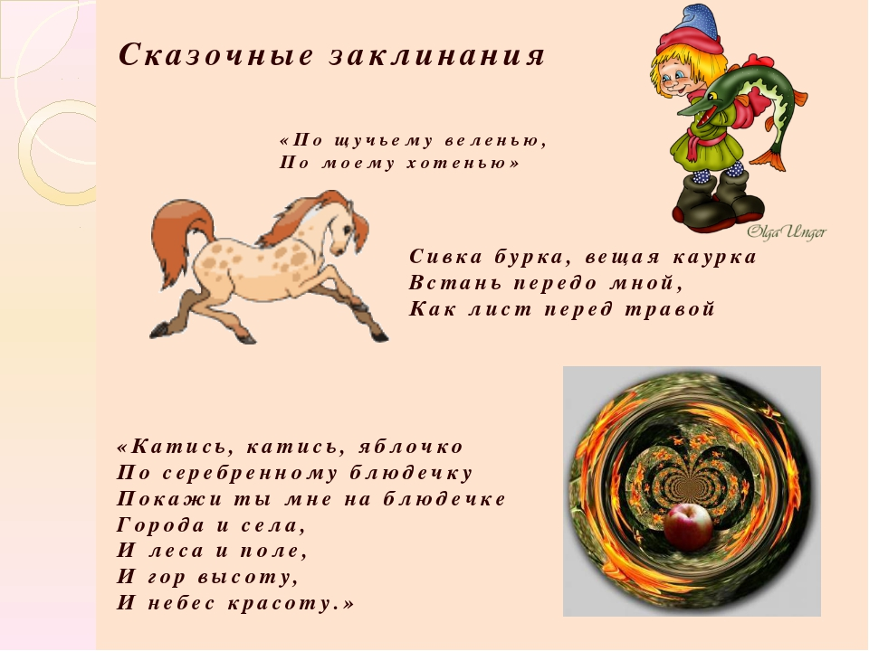
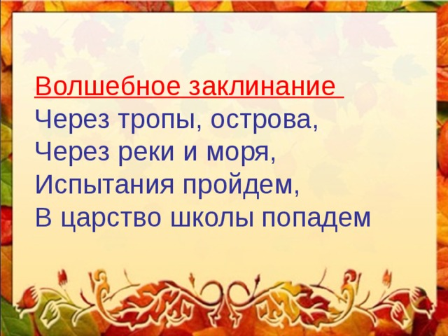
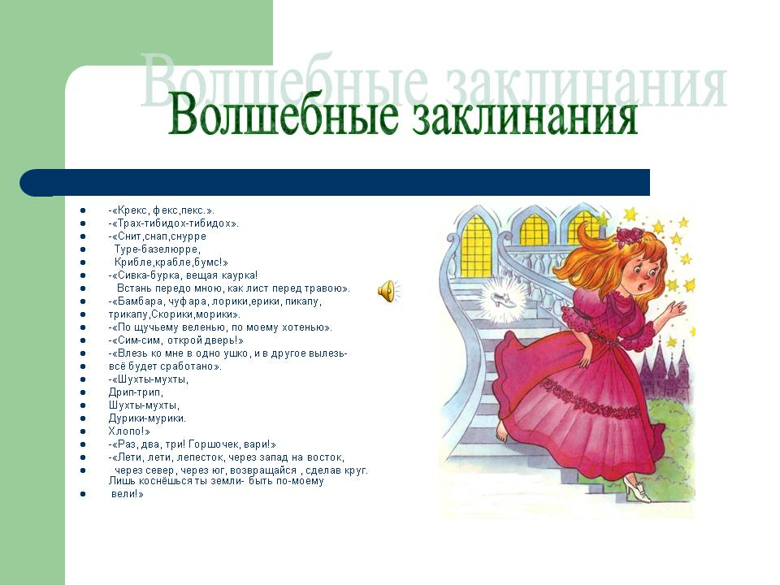
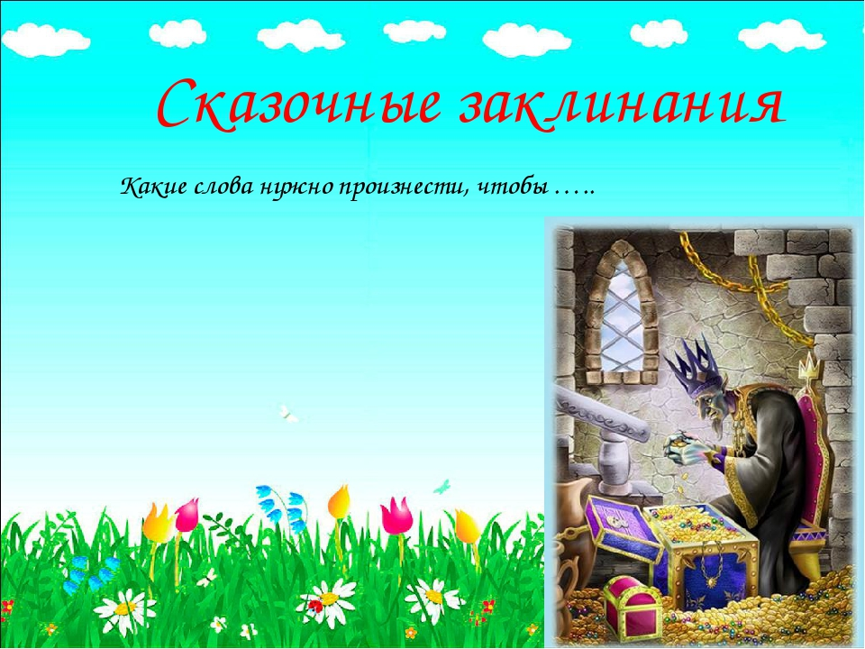

Заклинание (заклятие) — вид ритуально-магической речи; прямое обращение к объекту магического воздействия в императивной форме — требования, приказа, побуждения, просьбы, мольбы, предупреждения, запрещения, угрозы. В некоторых источниках представлены как способ борьбы и/или способ приручить магических существ (магических тварей). Может быть самостоятельным вербальным ритуалом (таковы, например, приветствия типа «здравствуй!», пожелания вреда — проклятия или отсылки типа «иди ты к чёрту!»), приговором при обрядовом или практическом действии, а также составной частью более сложных вербальных форм — колдовских заговоров, благопожеланий, обрядовых песен (например, колядок) и др. Они близки психологическим аффирмациям, религиозным молитвам и мантрам. С помощью заклинаний люди пытаются добиться исполнения желаний, которые они не могут осуществить обычным способом (повлиять на погоду, урожай и т. п.). В отличие от молитв, которые являются лишь просьбами к Богу или к духам, заклинание предназначено для принудительного исполнения желания. В Западной Европе в средние века заклинания, как правило, произносились на латыни. Слово «абракадабра», в современном русском языке обозначающее бессмыслицу, произошло от средневекового заклинания. Заклинания нередко используют иллюзионисты для достижения театрального эффекта. В современной психологии существует методы гипноза и аффирмации, имеющий схожие с заклинаниями цели и способы применения.
   